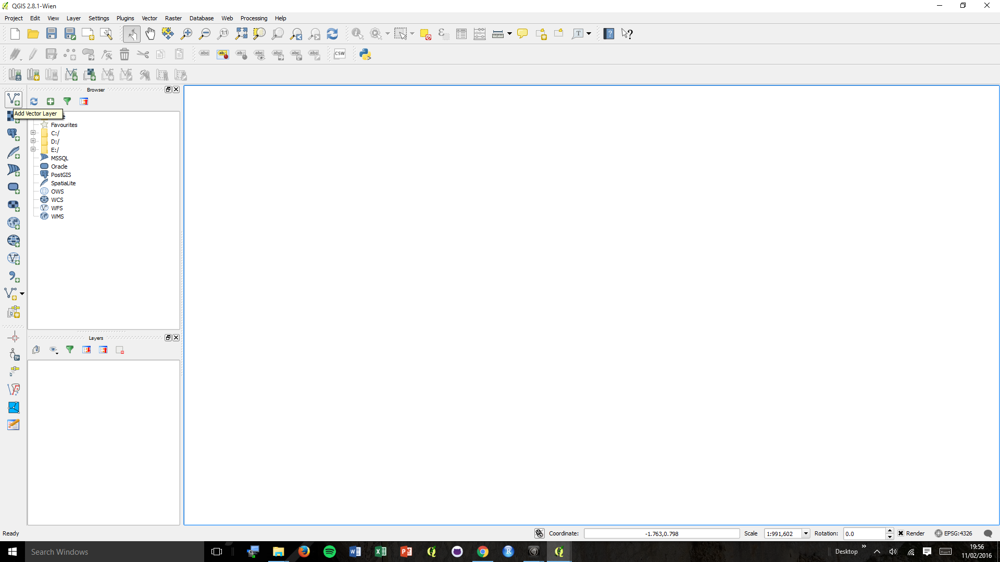
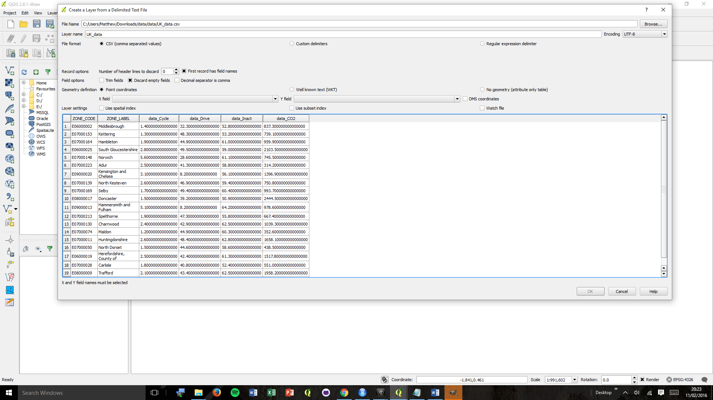
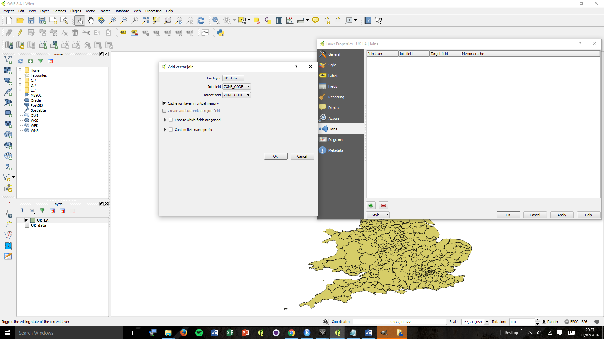

Take a quick look at this website. This is a map that I created for Road Safety Week 2015 in collaboration with a road safety charity called Brake.They came to me via my supervisor has they wanted some maps to provide evidence in the relationship between active transport (cycling and walking), car use and deaths due to air quality. Rather than producing a static map I decided that a more interactive tool would be best as people tend to look at their home environment rather than the UK as a whole.
This interactive tutorial relies on a great example provided by leaflet, after the tutorial go and have a look at this example and the other demonstrations to help get a sense of what you can do with the leaflet plugin. a great extenstion is also availible for leaflet through mapbox, if you enjoyed this tutorial then I would suggest having a look at mapbox as it adds on a lot of extra functionality to leaflet.
The map uses a mixture of JavaScript, Cascading Style Sheets (CSS) and HTML as well as using Leaflet and AJAX JavaScript plugins to help with the functionality. In this practical I will guide you through how to:
1) load in a leaflet map
2) Create a geoJson layer using QGIS
3) Load a geoJson layer into the map
4) Manipulate the geoJson for hover events
5) Create a panel to display more info
Leaflet is a JavaScript plugin in for web mapping. We are going to use Leaflet instead of Google Maps API because Leaflet is open-source (free to use!) and lightweight (only 33KB).
In order to create a map like the one above you first need to create a file called WWW in your M drive. After this open Notepad ++ and create a file named index.html (ensure you change the file type to html and not left as .txt in the dropdown box). Now Lets test it - Copy and paste the following code into index.html.
<!DOCTYPE>
<HTML>
<HEAD>
<TITLE>
Data Vis with JavaScript
</TITLE>
</HEAD>
<BODY>
Hello, World!
</BODY>
</HTML>
This should create a web page with the title Hello, World!
on your screen when you visit http://www.personal.leeds.ac.uk/~'YOUR USERNAME'/WWW/index.html. Hello, World! is often used computer to test whether certain parts of the code are working correctly, have a look
at the wiki page linked.
Congratulations! You've just made a web page!
Now lets start adding in the leaflet map. First you will have tell the web page to load the leaflet plugin and associated css along with creating a DIV element to hold the Leaflet map.
To do this copy and paste the following code into the head section of your index.html file
<!DOCTYPE>
<HTML>
<HEAD>
<TITLE>
Data Vis with JavaScript
</TITLE>
<script src="http://cdn.leafletjs.com/leaflet/v0.7.7/leaflet.js"></script>
<link rel="stylesheet" href="http://cdn.leafletjs.com/leaflet/v0.7.7/leaflet.css">
</HEAD>
<BODY>
Hello, World!
<DIV id = "map"></DIV>
</BODY>
</HTML>
Next you will have to create a JavaScript function to in order to create the map. Go to Notepad++ and create a JavaScript file called code. Now copy the code below into your new code.js file
function initmap() {
var map = L.map('map').setView([51.505, -0.09], 13);
L.tileLayer('http://{s}.tile.osm.org/{z}/{x}/{y}.png', {
attribution: '© <a href="http://osm.org/copyright">OpenStreetMap</a> contributors'
}).addTo(map);
L.marker([51.5, -0.09]).addTo(map)
.bindPopup('A pretty CSS3 popup.<br> Easily customizable.')
.openPopup();
}
Next you will have to create a JavaScript function to in order to create the map. Go to Notepad++ and create a JavaScript file called code. Now copy the code below into your new code.js file
In order to display the map we need to tell the browser what size we want the map, this is done using CSS. In Notepad++ create a file called style.css and the paste in the code below.
#map {
height: 100%;
width: 100%;
}
Finally we need to tell the computer where to find the JavaScript and CSS in order to display the map, this is done in the same as loading in the leaflet plugin. Just copy and paste the code below into the head section on index.html,ensure you have the correct file path, if the style.css and code.js files are in the same file as index.html then no file path is needed, just type the file name.
<LINK REL="stylesheet" HREF="style.css" />
<script type="text/javascript" src="code.js"></script>
Well done! On your website you should now have a full screen map which you can pan and zoom around.
In order to display data on our web page we first need to create some data. To do this we will join 2 datasets together, one data set has our aggregated data in and another one has spatial information. These
2 files will be combined using R and saved as a geojson file which can then be read into our web page.
Download the files here
In these files we have 2 data sources but many files. This is because out spatial data is in the form of a shapefile, these files are compromised of several files and you must keep all of the associated together in the same folder
otherwise the data will become corrupt and unusable. The other file is a .csv file, open this up in excel and have a look at the data.
Open RStudio (if you are on your own laptop please download it here). RStudio is a free open source IDE for the R programming language, it makes
programming in R far easier as it has inbuilt debugging and visualisation tools.
In R we are going to do the following:
1) read in the shapefile
2) Read in the .csv
3) Join the 2 files together
4) save the output as a geojson
5) Do some simple querying (we might as well while we are here!)
The following code carries out steps 1 2 3 and in the sequence above. Copy and paste the code below (edit the filepath and filename sections)
into RStudio to run the code highlight the code and press control and enter. You should end up with a plot of the UK and a
variable called data in the objects list, click on this and you should see the data magically appear in R. The next line joins UK to data via
the common column of data in ZONE_LABEL. The following line tells the computer to save the newly created merged file as a geojson.
See coding isn't difficult after all! In the space of 4 lines of code you read in 2 files, joined them up and read the data out in a new format.
install.packages("rgdal")
library(rgdal)
UK <- readOGR(dsn = 'C:/Users/Matt/Downloads/data', layer = 'UK_LA')
plot(UK)
data <- read.csv(file="C:/Users/Matt/Downloads/data/UK_data.csv ", header=TRUE, sep=",")
UK_Data <- merge(x = UK, y = data, by = "ZONE_CODE", all = TRUE)
writeOGR(UK_Data, 'C:/Users/Matt/Downloads/data/UK_Data.geojson', layer="UK_Data", driver="GeoJSON")
While we are in R we'll look at some simple features. Copy and paste the code below to see how we can use the R programming language to query
data and produce other visualisations such as graphs.
In the example below we create a quick map from some subsets. The map finds areas where the inactivity rate is > 60 % and colours these red,
The next subset looks at two variables and finds where the inactivity is above 65% and the percentage of people who drive to work is above 45%,
these areas are then coloured blue.
summary(UK_Data)
plot(UK_Data, col = "grey" )
selection <- subset(UK_Data, data_Inact > 60)
plot(selection, col ="red", add =TRUE)
multiselection <- subset(UK_Data, data_Inact > 65 & data_Drive > 45)
plot(multiselection, col= "blue", add = TRUE)
In the next example we will make a quick scatter plot using the plotly library. Try playing around with the x and y data to produce some interesting graphs, also try to create a subset
so the graph excludes Scottish and Welsh data as we don't have all the data for these regions. Have a look at the plotly library and have a go at producing
some other graphs.
install.packages("plotly")
library(plotly)
plot_ly(data = data, x = data_Inact, y = data_CO2, mode = "markers")
If coding scares you a bit and you'd prefer to see what you are doing then QGIS is the best way forward. QGIS is a GIS software package, again open source (starting to see a trend?), that allows
the mapping of spatial data and geospatial queries.
To create the data download the source data here. Open up QGIS and load in the shapefile from the source data by clicking
this button. Navigate to the file UK_LA.shp and open it. You should now have an image of the UK on your screen.

Next we will load in the data. To do this click on the comma that you can see on the right hand pane and load in the data, ensure that you choose the UK_data.csv, you should get a similar screen to
below. Hint - this data has no geometry...

We now need to join the two layers together. Right click on the UK_LA layer and select properties, navigate to the join section on the new pane. Your screen should look like this. Ensure that you
are basing your join on the UK_Data layer via the common column name ZONE_CODE. Don't forget to apply the join on the properties window pane.

To test if the join has worked right click on the UK_LA layer and select attribute table, you should see that the contents of UK_Data is now attached to UK_LA. If this has worked then right click on
the UK_LA layer and click save as. You should save this as a geojson layer and select the coordinate projection as WGS84 NOT British National Grid. I'm going to call my file UK_Data.geojson you
might also want too...
Well done! You've mastered QGIS! You can now put Cartographer on your CV!
Open the geojson layer that you created in step 3 or 2 in notepad++. Here you want to create a variable that can be called in to JavaScript function. To do this type "var data =" before the geojson data
and save the file as data.js, ensure you change the filetype to javascript. Next include a link in the head of the html like the line below.
<script type="text/javascript" src="data.js"></script>
In order to read in the data you need to add the new variable which stores the geojson data to the Leaflet map. In order to do this paste the code below in code.js
L.geoJson(data).addTo(map);
Now go onto the internet and see if the geojson is visible on the webpage, you should have the a blue UK split into local authorities.
In order to make the map colourful you can use the code below to create a cloropleth map (remove the previous line of code), where the colour of the map represents the value of one of the variables in the data. This code will
draw the percentage of people who drive to work for each local authority. Try finding the piece of code that points to this data and changing the variable which is being mapped.
function getColor(d) {
return d > 50 ? '#800026' :
d > 40 ? '#BD0026' :
d > 35 ? '#E31A1C' :
d > 30 ? '#FC4E2A' :
d > 25 ? '#FD8D3C' :
d > 20 ? '#FEB24C' :
d > 10 ? '#FED976' :
#FFEDA0';
}
function style(feature) {
return {
fillColor: getColor(feature.properties.data_Drive),
weight: 2,
opacity: 1,
color: 'white',
dashArray: '3',
fillOpacity: 0.7
};
}
L.geoJson(data, {style: style}).addTo(map);
Now we will add some interactive functions to our map. The code below will highlight whichever local authority that you are hovering over. Copy and paste this below your previous code.
function highlightFeature(e) {
var layer = e.target;
layer.setStyle({
weight: 5,
color: '#666',
dashArray: '',
fillOpacity: 0.7
});
if (!L.Browser.ie && !L.Browser.opera) {
layer.bringToFront();
}
}
function resetHighlight(e) {
geojson.resetStyle(e.target);
}
You may have noticed some unusaul behaviour after using the last piece of code. That is becuase the geojson is not accessible yet through a variable. Fix this by creating a variable called geojson
before the listeners that you have just created.
Lets add some extra functions. Copy and paste the code below and try to find out what it is doing. HINT you will need to replace a previous line of code.
function zoomToFeature(e) {
map.fitBounds(e.target.getBounds());
}
function onEachFeature(feature, layer) {
layer.on({
mouseover: highlightFeature,
mouseout: resetHighlight,
click: zoomToFeature
});
}
geojson = L.geoJson(statesData, {
style: style,
onEachFeature: onEachFeature
}).addTo(map);
Copy and paste the following code into you code.js, this will create
var info = L.control(); info.update = function (props) { this._div.innerHTML = (props ? '<b><h1>' + props.ZONE_LABEL + '</h1></b>' : '-') + '<h4>CO2 emissions</h4>' + (props ? '<h3><b>' + props.data_CO2 + ' tonnes</h3></b>' : '-') + '<h4>Drive to work</h4>' + ( props ? '<h3><b>' + props.data_Drive + ' %</h3></b>' : '-' ) + '<h4>Cycle to work</h4>' + ( props ? '<h3><b>' + props.data_Cycle + ' %</h3></b>' : '-' ) + '<h4>Inactive</h4>' + ( props ? '<h3><b>' + props.data_Inact + ' %</h3></b>' : '-' ) + }; info.addTo(map);
We also need to update the control when the the cursor is hovered over a local authority, so we need to change the hover listeners, add the following lines of code to the listeners.
function highlightFeature(e) { ... info.update(layer.feature.properties); } function resetHighlight(e) { ... info.update(); }
The control box is in need of some styling, copy and paste this code into you css file.
.info { padding: 6px 8px; font: 14px/16px Arial, Helvetica, sans-serif; background: white; background: rgba(255,255,255,0.8); box-shadow: 0 0 15px rgba(0,0,0,0.2); border-radius: 5px; } .info h4 { margin: 0 0 5px; color: #777; }
Congratulations! you've created your first interactive leaflet map! Have a play around with the site and try adding in things and changing bits of the site.